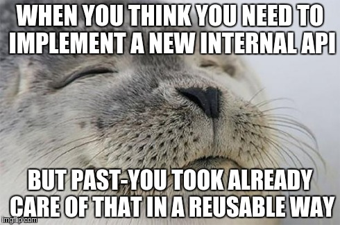
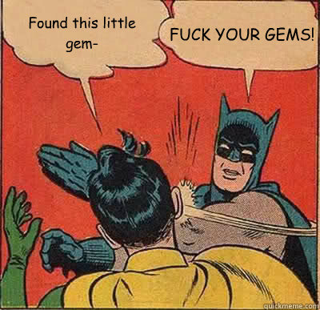

Este é um assunto bem simples de se trabalhar quando falamos de Ruby. Ainda mais com gems poderosas que temos acesso como rest-client ou ActiveResource.
Hoje nós vamos trabalhar com a rest-client.
Quanto a API a ser utilizada, podemos usar qualquer uma famosa para reproduzir este tutorial.
Eu vou usar a do MyFinance pois é a minha demanda atual de trabalho integrá-la.
Sugestões de API para consumir
Algumas sugestões para você incrementar seu conhecimento:

Instalando a gem
Adicione no Gemfile:
gem 'rest-client'
Depois execute:
bundle

Iniciando nossa classe
No meu caso, como é um projeto em Rails, ele conta com toda uma arquitetura já pré-definida. Isso me leva a criar uma Service. Mas se tratando de Ruby puro, uma simples classe resolveria o problema da mesma forma.
class MyFinanceService
attr_reader :authentication_token, :account_id, :base_url
end
Vamos adicionar ao construtor da nossa classe 2 parâmetros:
- authentication_token: O token requisitado pela nossa API
- account_id: (opcional) Este é um parâmetro extra que a API que nós iremos consumir pede. Ela será adicionada no nosso header.
def initialize(authentication_token, account_id)
@authentication_token = authentication_token
@account_id = account_id
@base_url = 'https://app.myfinance.com.br'
end
Agora nós já temos estes 3 atributos como constantes em nossa classe podemos seguir.
Autenticação
A autenticação do MyFinance é feita com HTTP Basic.
Só que ao invés do típico username:password, o username é o @authentication_token em Base64, e a senha é sempre X.
Vamos supor que:
@authentication_token = '7c6eea82bb824805e1e03498eb70f40e4e5d09816c1bb2e'
@account_id = 25641
O nosso authorization_hash (vamos chamá-lo assim) será:
N2M2ZWVhODJiYjgyNDgwNWUxZTAzNDk4ZWI3MGY0MGU0ZTVkMDk4MTZjMWJiMmU=
Para calcular nosso authorization_hash, vamos criar um novo método:
def authorization_hash
Base64.strict_encode64(@authentication_token)
end
Vamos preparar um método que já defina nossos headers por padrão. Como eu disse acima, o account_id é enviado através do Header, então vamos colocá-lo aqui.
def headers
{
'Accept': 'application/json',
'Content-type': 'application/json',
'ACCOUNT_ID': @account_id,
'Authorization': "Basic #{authorization_hash}:X"
}
end
Já temos tudo necessário para podermos fazer requisições autenticadas.
Vamos fazer um teste para ver se está tudo ok, acessando um endpoint protegido chamado entities.
def entities
url = @base_url + '/entities.json'
request = RestClient.get(url, headers)
JSON.parse(request.body)
end
A variável url é apenas um helper para definirmos a URL absoluta final.
A variável request faz a solicitação, usando o nosso método headers como helper também para enviar cabeçalhos pré-definidos, incluindo nossa autenticação.
A última linha é necessária para converter o retorno da requisição em um objeto Ruby válido.
Este é um exemplo simples porém funcional. Mas caso a gente queira ir um pouco além, manipulando todo o recurso do Endpoint como um todo?
Usando APIs como Resources
No caso, precisaríamos refatorar nosso método para algo assim:
def entities
url = @base_url + '/entities'
RestClient::Resource.new(url, { headers: headers } )
end
Precisamos matar o JSON.parse, pois agora teremos um acesso completo ao endpoint.
Para facilitar as coisas, podemos escrever um helper que faça esse trabalho sujo de parsear as strings:
def parse(request)
JSON.parse(request.body)
end
Agora podemos manipular nosso endpoint da seguinte forma:
GET /entities
# Recupera as entidades
entities = @service.entities.get
# Transforma em JSON
@service.parse(entitites)
Isto irá retornar um Array com todas as entidades do endpoint.
GET /entities/:id
# Recupera a entidade
entity = @service.entities['/1'].get
# Transforma em JSON
@service.parse(entity)
Isto irá retornar especificamente a entidade solicitada através do parâmetro passado.
PUT /entities/:id
# Recupera a entidade (sem carregá-la diretamente)
entity = @service.entities['/28698']
# Edita ela
payload = { entity: { name: 'Abacate Editado' } }
entity.put payload
# Recupera a entidade editada
@service.parse(entity.get)
Isto irá editar a entidade solicitada, usando o payload enviado como parâmetro.
POST /entities
# Cria a nova entidade
payload = { entity: { name: 'Abacate Editado' } }
entity = @service.entities.post payload
# Recupera a entidade criada
@service.parse(entity)
Isto irá criar uma nova entidade, usando o payload como parâmetro.
DELETE /entities/:id
@service.entities['/28698'].delete
Isto irá deletar nossa entidade.
Conclusão
Como vocês podem ver, 2 linhas de método com esta gem te dá o poder de manipular 100% uma API RESTful. As possibilidades são infinitas.
Obrigado e até a próxima! :)